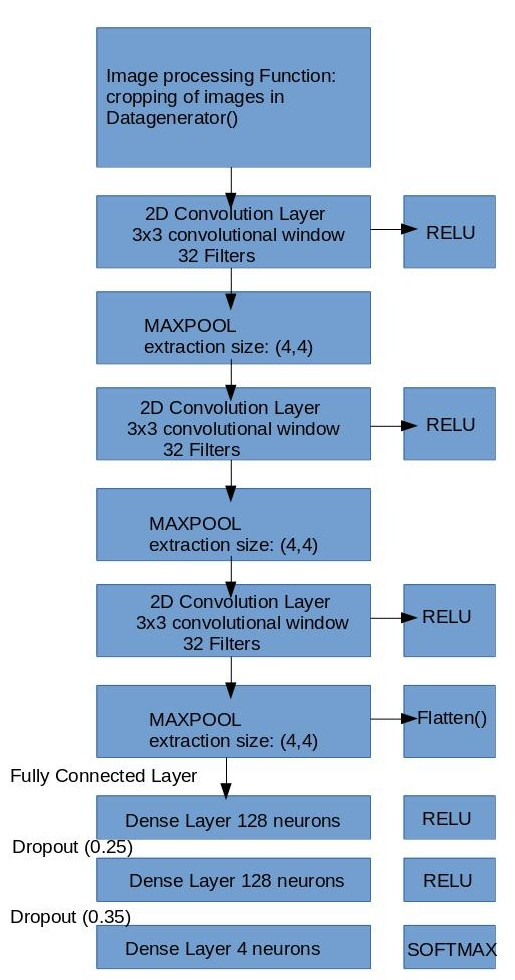

Project Logs for Simple Shapes using Convolutional Neural Network project
Current Project: Simple Shapes using Convolutional Neural Networks
General Problem:
To get the machine to learn simple shapes of triangle,
circles, squares and rectangles individually and their intersections.
Proposed Solution:
Since the architecture of a convolutional neural network (CNN)
focuses on the features of images in pixels, it will be able to generalize a machine
learning model of simple shapes. The first goal of the project is to get the computer
to learn each individual shape (triangle, circle, square and rectangle) generally.
The second goal is to get the machine to learn the intersection of the shapes either
by adding onto the CNN model using a recurrent network or a multi-label output
instead of a multi-class output. Simple subsets of the creation of image data
and preparing the CNN file for loading will be compiled locally on Anaconda’s
Python 3, which uses Spyder as the main IDE. The main CNN file will be tested
on Anaconda’s virtual environment in Python 2 and compiled remotely on Google
Cloud’s Machine Learning Engine using Keras as a front end library,
Tensorflow as a backend.
Actual tasks that will be performed:
1. Research on neural networks in regards to their architecture and optimization methods.
2. Learn Python 3 online and multivariable calculus. Review linear algebra.
3. Do a tutorial on a simple cats and dogs CNN, which is a very popular example on the web.
4. Read Keras documentation. There’s a cheat-sheet available online on basic functions in Keras.
5. Figure out how to successfully compile a CNN in Google Cloud’s Machine Learning Engine
6. Train the CNN as necessary, prevent overfitting, focus on optimization for a general model through feature extraction.
7. Test the CNN model by loading it and seeing how it performs on unseen images.
8. Make changes to the architecture of the CNN as necessary.
Week of October 23 2017:
The baby AI image dataset is very old and has bugs in it. I wasn’t
able to extract the dataset by running their python program. So, I spent all
this time creating my own dataset and preparing it for loading using pickle’s
serialization format into Google Cloud’s Machine Learning Engine. I created
my own python class called Draw.py, which uses multiprocessing of Pool workers
in a class to draw images themselves as well as the intersection of images.
Multiprocessing allows me to make as many images as possible by using parallel
computing of 4 cores in a CPU.


10.31.17:
The training set consists of a total of 6,200 images. Before being
serialized into a pickle file, the training set is organized in a tuple structure
(numpy array, y_label). The numpy array is the data array processed by the
PIL module in (300, 300, 3) format. The numpy array represents the matrix in
float32 of the image. The y_label represents the target values of the shapes,
which is the expected output of the convolutional neural network.
Keras requires categorical crossentropy loss to be computed with
categorical encodings. The categorical one hot encoding transfers integers
(0...number of classes) into binary format. My y_label is a series of categorical
hot encodings of 0, 1, 2 in binary format of three classes (circles, rectangles
and squares, triangle).
I had to change the numpy array data structure from a default float to
float32 bit since the loading of the pickle files in the default float structure
consumes too much memory in megabytes per file. The difference almost reduced
the entire file size from 3.0 GB (without compression) to 1.7 G.B. The pickle
files are too huge, so I have to reduce the quality and size of each image to
reduce the pickle files. Pickle loads and image creation of the shapes are
created using multiprocessing of independent Pool workers. I have been trying
to figure out how to create a pickle file, organize numpy arrays and store them
in a huge list, dump that huge list using joblib. Use memmap to store large
numpy arrays because it's inefficient for the list to increase in data memory
allocation in list comprehension of pickle loading. The file below create
(numpy arrays, y_label) tuples and stores them in a pickle file.
The short-term goal is to train the shapes individually first and then
figure out how to get the model to generalize on the “intersection” of shapes
either by using recurrent convolutional neural networks or multi-label output
using supervised learning. How will the network learn? I need to adjust the
architecture of the CNN. The multi-label output is simpler and much easier.
This requires sigmoid activation and loss = binary_crossentropy at the output
layer for multi-label output to work.
11.3-11.5.17:
Google cloud works locally but had errors of loading pickle file remotely
on google cloud because the Cloud Compute Engine doesn't recognize python's file
descriptor. I need to use tensorflow's open method, need to set gs:// for every
input file data for Google Cloud to recognized it. (See CNN loader file to run in cloud)
11.6.17:
There is an memory error when running on Google Cloud's regular CPU after
one set of 10 epochs for the first half of the dataset. There is not enough memory
allocated and training took 1 hour, which is too slow. I decided to use yaml
configuration to run on a single NVIDIA K80 GPU processor on Google Cloud Compute Engine.
11.7.17:
I executed this with no errors in Google Cloud with GPU computing on a
validation set 1000 images and training set of 6000 images with roughly 60 percent
accuracy, 3 percent error rate in 3 series of 10 epochs per training set each.
The learning model is able to be saved. Google Cloud automatically plots the
gradient on Tensorboard. The reason the error rate is so high and accuracy is low
is because there are alot of background samples that the CNN intakes as pool sizes.
Background colored samples are data that contains no linear information -
unimportant numpy array figures. so when the network does the maxpool of background
samples near the 'important line samples', if the background samples are in greater
distributation than the amount of important line samples, maxpool will label that
area as background sample which makes the neurons increase the weights for backgrounds
instead of the contour images itself.
11.8.17:
I increased the y-label output from 3 classes to 4 classes. Keras does
the automatic shuffle at every epoch in fit_generator. I changed the architecture
of the CNN, add drop out layers that might drop out neurons that have no data of
contour characteristics being drawn or do some cropping of batches that do not
consist of contour information beforehand. I increased the pool size of the CNN
and changed it from adam optimizer to rms optimizer. The CNN will do fit the generator
model from data augmentation in 20 epochs with validation and training inputs inputted.
I also implemented the validation set correctly during the fitting of the network with
real data augmentation. The CNN does poorly during training, with an accuracy of 59
percent and 6 percent loss. This is because I used 3,000 images to train the dataset,
which is 1/3 of the total training set, which might not contain evenly distributed
images of each type of shape. I reduced the total training set by a third because
I want to focus on getting the architecture of the CNN right and there is memory
error at the Tesla K80 GPU from the loading of the images since the validation data
increased by twice as much as the previous one.
11.9.17:
Trying to figure out how to redesign the architecture of my CNN by looking
back on the research I did in Neural Network Design. I also need to create my
own data generator (augmentation) function that crops large scaled images to
reduce unnecessary background sampling of images in Pooling. I don’t want to
separate the contours and filling of the images from the background because
the background plays an important part in the composition of the entire image
object. Such images that need to be cropped, where the dotted lines represent
the cropping location, in a generator function are:


Also don't know I'm having a segmentation fault when implementing
command line arguments in the cnn_sobel_py2.py file. This segmentation fault
happens even without implementing the crop function that has a broken cv2
module installation in python 2. Python 3 in cv2 works fine. It is because
of the opencv2 installation conda install -c https://conda.binstar.org/menpo
opencv (in python 2 py27 environment). In python 3, it cv2 is installed in
conda install --channel https://conda.anaconda.org/menpo opencv3 (
not on environment). It's also I didn't use conda install -c conda-forge
opencv (didn't include conda-forge. I'm testing it on my other machine to
see if it works.
11.15.17:
The cropping function called get_edges works in the convolutional neural
network loader, but Keras' generator wants me to return the original shape of
the array (300, 300, 300). The resulting image being generated by the processor
function get_edges is a cropped version of the image pasted on a white background
which is 300 by 300 pixels. So the object is segmented from the background in
this way. I don't know how to tell keras during the convolution to ignore all
pure white pixels, or change to a higher stride if it reaches the white background.
(The second option seems to be a better design, I'll look into it after finding
out how the network will do with the cropping function being implemented)
Get_edges cropping function will get boundaries of contour shapes and crops
the images based on the location of the rectangular boundaries.
Increased the offset from 15 to 50 or even 100, to allow more space for boundary area.
This is because sometimes the cropping function crops the lines of the shape that are
at the edges. I also need to write a function to remove cropped layers that are too
small because that information is ambiguous, which might confuse the features the
cnn is trying to detect. Such examples are seen in the images below, which needs
to be removed from the training_set once the cropping dimensions reach to a space where it's too small
11.16.17:
The current designs of the cnn architecture are:
Cropping as a Function Call V.S. Cropping as a Layer in between Convolutions

If offset is 50 or greater, the offset extends the original image when pasted on the
background (ValueError: tile cannot extend outside image) Going to clarify the architecture
of the cnn (number neurons adjustment) and adding more details that are consistent with
the code in the
cnn loader file.
11.17.17–11.20.17:
There are some minor problems when Keras process the dataset from the image
generator using the get_edges preprocessing function. Cropping as a preprocessing
function works but the sobel algorithm sometimes returns an empty contour list.
This is because the image contains an object that blends so well with the background
or an object is too small for the sobel algorithm to detect the contours. In the
get_edges function if it’s included in the main convolutional neural network
loader file, it will return the original image array without the cropping if
the contours are empty. Cropping as a layer would not work in this case of exactly
cropping the background data because Keras’ Cropping2D layer crops all the input
images once, which will manipulate the data too much where you can’t figure out
squares from rectangles.
11.20.17-12.1.17:
The cropping of the images will be incorporated as a function since the
cropping as a layer only works for an entire dataset input, not per image. The
convolutional neural network might have better accuracy with PNG files than JPG
files. Due to memory limitations, JPG files will be used. I looked at the difference
between the file types: PNG has more detail and JPG has some noise at some contours.
Google Cloud has memory limitations per job. Increasing the number of GPUs won’t
make a difference to the memory limit for a Google Cloud job. I created a virtual
machine instance with 58GB of memory at the root in the cloud to solve this problem,
and installed Tensorflow from source with GPU CUDA support for their Tesla K80 GPU.
I've been trying to get my neural network to perform better accuracies and losses,
it seems to not reach an accuracy over 75%. I tried increasing the number of layers,
but it didn't work. I might try fine-tuning the dropout and add a stride of 2,2
parameters for the convolutional layers. I also don't need to split the dataset
anymore, running 8000 images for training and 1600 images for validating the training
set. I got the multilabel classification (intersections of shapes) to work by changing
the y_labels using the cross entropy function to binary_crossentropy and sigmoid
activations. I will test that after this set has a better accuracy. I am reading up
on how to change my code to recurrent convolutional neural networks where the convolution
layer will get the pixelized data from the images, followed by a LSTM recurrent layer
which will perform object classification and detection using rectangular boundaries
rather than the Dense MLP layer I have currently.
12.5.17–12.8.17:
The compression of PNG image data is more than half the total size of JPG
total image data (from 225 MB for JPG to 64 MB for PNG for 16000 images). I decided
to see if I can get better training in PNG data. The main reason why the loss won’t
go any lower than 0.38 is because of the input data; the input data is too complicated
with the intersection of the same shapes per image. I decided to simplify that by
drawing one shape per image. I manually select my data because I noticed that the
data is far from perfect: circles are diluted, squares and rectangles need to be in
the image instead of off the border and the triangles are too small. To deal with
the background issue, I must get Draw.py to return rgb as a string, convert it to
tuple in order to get the background color of that image. I need that background
color since I would be using the Sobel algorithm to crop the images and a CNN requires
it to be the same shape. There will be no preprocessing as a function used in the main
CNN loader file because I already did the cropping manually through the cnn_sobel_main.py
file and saving them as images. Basically, the Sobel algorithm crops the image, the Image
module fills it with the same background color and the cropped image is pasted on a
200 pixels by 200 pixels image.
12.8.17–12.15.17:
The model is underfitting the dataset since the validation loss is half
of the training loss. The loss got a lot lower to around 0.15, with an accuracy
of 94%. The test loss is 1.02644992199 with a test accuracy 0.935570469799. This
is a lot better from the previous data input of images. I would need to increase
the training input and the number of layers in the CNN architecture. After the CNN
architecture is changed, there’s much less of an underfit with a starting training
loss of 0.3778 and training accuracy of 0.8355, and the validation loss is 0.12 and
validation accuracy is 0.96. I’m not sure if that’s underfitting or if it’s good.
The training looks like it’s getting to a lower loss of 0.112.
Single Output with Multi-Class Classification
The convolutional neural network will learn using supervised training in Keras.
The training and validation datasets will have a supervised output of a single label
for each class in a 300 by 300 image. The dataset consisting of circles, triangles, squares
and rectangles is created by the program draw.py. It uses multiprocessing of independent pool workers
to draw these shapes and saving these shapes in ".png" format. Draw.py uses the cairo library for drawing
the shapes and the random library to randomize the location and size of these shapes. Each 300 by 300
image will have two variations, which are the linear contours and the fill of the shape pertaining to
the same class. To execute the file, simply run python draw.py --draw-func draw_circle --num-images 2000
--file-dir training_set/circle/circle_, where draw-func represents the drawing function that draws
either circle, triangle, square or rectangle or a combination of these shapes if needed. There are
2,000 images per data shape with a total of 8,000 images for the training dataset. The validation
dataset consists of 400 images per data shape with a total of 1,600 images, which is 20% of the
training dataset.
A single PNG image file has a better pixel precision, but it comes at a cost of having
twice or even three times as much data storage as a JPEG file. Since the training data tend
to increase when the architecture of the convolutional neural network has more layers, it is efficient
to reduce the size of the images by converting from PNG to JPEG. The program reduce_images.py
reduces image sizes by adjusting a ratio of height and base decrease. It then saves the images in
pickle file, where the same pickle file is opened to save the newly reduced size images into a folder.
After each image file size is reduced, pickletestcats.py is the main file that will process
the reduced sized images. It is a multiprocessing program of independent pool workers, which uses the
Pillow 3 module to open JPEG image files. The pool workers individually convert the JPEG image file into
a numpy array of shape (300, 300, 3), where 300 represents the width and the height of the image and 3
represents the color format. The image's corresponding output label (y_label) is generated by using the
Keras library of to_categorical encoding. The encoding transforms integers into different binary 1
and 0 encodings of output classes. These classes are circle, rectangle, triangle, and square. The numpy
array's total size of 2000 images per shape is reduced by a half if the numpy data structure is a
float-16 instead of float-32. After the execution of the program for each shape in the training and
validation data, there will be eight pickle files called “circle.pkl”, “triangle.pkl”, “square.pkl”,
“rectangle.pkl”, “valid_circle.pkl”, “valid_triangle.pkl”, “valid_square.pkl” and “valid_rectangle.pkl”.
A tuple of (image data, output y label) is returned by the pool workers.
The combined pickled data of all the shapes represent the training dataset and the validation
dataset, which is needed for the convolutional neural network to learn. The file merge_files_revised.py
merges the shapes by using the Loader class, which is a multiprocessing module, to load the images and
store them in a very large list. All the pool workers execute the loading of the images and the appending
of the tuple (image data, output y label) independently. Therefore, a global storage of each large dataset
list per shape is needed because each pool worker needs access to the it. I tried allocating the list using
“None” times number of images. The numpy array is organized in a tuple, so the list allocation doesn't work
in numpy arrays or in tuples. Memmap would not work either because the merged dataset contains a tuple,
not a single memory array. After the loaded data is stored in the large lists, the program uses list concatenation
to merge all the shapes together, forming the training and validation dataset.
Since the dataset is a very large list, joblib does a successful job dumping and compressing into a file,
which will be loaded from load_merge_files.py. The reason for having one file for merging the dataset and another
file for loading the merged dataset is that it is better to shuffle the dataset before loading into the convolutional
neural network. Although the Keras' generator automatically shuffles with each run of an epoch, it is a good practice
to shuffle the training dataset to allow for randomization of images. The program shuffles the dataset and loads the
previously merged files by organizing the tuple into two different lists. The first one contains the numpy pixel data
and the second list contains its corresponding y label output, which is needed for a supervised training of the neural
network. The large list is being stored using the numpy array's memory mapping because each shape of the data pixel
array is (300, 300, 3) and its corresponding y output label is (4, ) where 4 represents the number of classes to be
learned by the convolutional neural network.
Background data without the Shape Contours
It is redundant for the convolutional neural network in cnn_copy_sobel_test.py to obtain pixelized convolutions
from background pixels that do not have object contours. An image preprocessing function is needed before the image
data are inputted into the first two-dimensional convolution of the network. This function get_edges is responsible
for cropping the image and reducing the background space. The input image needs to be converted into grayscale for
the Sobel algorithm to process. Since findContours of the opencv2 module alters the original image, a copy of the
input image is needed. After finding the contours in both the x and y directions of the Sobel algorithm, the gradients
in both directions clarify the contour boundaries of the image. The combined gradient adds the weights in gradients
from x and y derivatives, which finalizes the pixels for the image contours.
When the coordinates of the contours are detected, the rectangular boundaries are drawn around it by using opencv2’s rectangle method. A list for x coordinates and another list for y coordinates stores all the x and y coordinates returned by findContours. The minimum and maximum values of the x and y lists will determine the area of the cropping region. The locations of the rectangles are in (x,y) coordinates where the cropped version will be from the top left corner (smallest_x, smallest_y) and the bottom right opposite corner (largest_x, largest y). The original input image will be cropped by slicing the coordinates of the original array.
The layers of the convolutional neural network will gather pixels from images that are cropped and will not see the original image. To maintain the scale consistency of the size of the input image at 300 pixels by 300 pixels in RGB format, the cropped image needs to be resized in aspect ratio with a fixed width of 300 pixels. The flatten() layer of the convolutional neural network requires the input images to have the same numpy shape array; get_edges must return the same shape of (300, 300, 3). A white background of 300 pixels by 300 pixels is created and converted into an 8-bit unsigned integer numpy array. By using the paste function from the Pillow library, the resized cropped image is pasted onto the white background. The pasted, cropped image is converted back into a 32-bit numpy float value because Keras processes numpy arrays in 32-bit float values.
Convolutional Neural Network Architecture
This convolutional neural network architecture uses the Keras Sequential model that acts as instances being layered on top of each other. The convolutional layers in the beginning of the neural network gather pixels of each input data. Depending on the quality and quantity of the image data, the number of output filters will vary. The output filters are the third dimensionality of the convolutional neural layer at the z axis where a rise in output filters and convolutional layers increases the parameter of the network. Increasing the number of filters is necessary as the training data increases, so 128 filters for the first layer of the second convolutional neural network is sufficient for 8,000 JPEG images. The convolutional layer will operate for each 6 pixels by 6 pixels square area in a single 300 pixels by 300 pixels image with a stride of (1,1) overlap. Padding might be needed since 600 doesn't divide evenly by 36. “Valid” padding means that there won’t be additional padding around the borders of the input image whereas "same" padding means padding around the input to create the same dimensions as the output filters. “Same” padding drastically increases the parameters of the network. For instance, a “valid” padding with two convolutional layers and a 3-layer perceptron has 5,063,428 parameters while the “same” padding of the equivalent architecture results in 9,623,422 parameters. The rectifier activation function outputs from the first layer of the convolutional neural network. It is an easier option than the sigmoid activation function because the rectifier activation function max(0, x) creates nonlinearity with the summation of weights without as much computation as the sigmoid activation function.
After the 6 pixels by 6 pixels convolutions are individually formed and activated with the rectifier, the 6 pixels by 6 pixels pool size will down-sample the number of pixels per output filter for the first convolutional layer. Then, a second two-dimensional convolutional neural layer is added to the Sequential model. To enable a growth of learning, the number of output filters is increased twice as much from 128 in the first layer to 256 in the second convolutional layer. The stride is still (1,1) by default in Keras with a convolution size of (6,6) with no padding. The relu activation is also the summation output from the second convolutional layer. After the convolutional filters are created in the second layer, the pixels will be downsampled through maxpool. Maxpooling determines whether each pixel is similar or belong to the surrounding pixels. If it is, the pixel will be visible in the down-sampled layer whereas the pixel removed in the maxpool layer if not.
After the formation of two convolutional layers with maxpool in between, the flattening of these layers allows the convolutional network to be fed into a traditional fully connected neural network. Keras requires that the flattening of the pixelized data input to have a defined shape in the format (width, height, color). The drawback of using convolutional layers is that the images must be the same size. However, convolutional layers are capable of extracting pixels and characteristics from the image data and processes them in layered filters. The basic multi-layer perceptron is not capable of directly extracting features from pixels. In the fully connected layer of the network, a Dense layer is added onto the Sequential model. A Dense layer represents a basic perceptron where 512 neurons are fully connected from the flattening layer to the output of the first Dense layer. The output again will be summed and calculated by the rectifier function. The dropout at the rate of 0.35 is added for the neural network to prevent overfitting. The neurons will be dropped out from the network, removing their connective weight functionality from the next Dense layer of the network.
The final layer will have four units because the number of output classes is four. The activation function for the last layer will be softmax, which squashes the probabilities of the output classes from zero to one. After the architecture of the neural network is defined as a Sequential model, the convolutional and dense layers for the single-label output with multi-class classification will be compiled. The optimizer for compiling the convolutional neural network is one of the most crucial parameters of the learning process. This is because the optimizer determines the learning rate, decay and momentum of the network for correct weight updates during the forward-pass and backpropogation.
Data input into the convolutional neural network architecture
After the architecture of the network, the optimizer and the loss functions are defined, the convolutional neural network will be feed the input images. Keras image generator uses data augmentation to create variations of the image data ranging from scaling, rotating to flipping in a default batch size of 32 per data input. The training data generator consists of rescaling at 1./255, shearing at 0.2, zooming at 0.2, horizontal flip and preprocessing function get_edges.
Training and validation data generators will fit the Sequential model on batches of 32 with real-time data augmentation (Keras.io). The validate data generator will be rescaled at 1./255 and will also be preprocessed with the function get_edges. Fitting the validation and training data generator will “compute quantities required for feature-wise normalization such as standard deviation, mean, and principal components if ZCA whitening is applied,” (Keras.io). Data augmentation will prevent overfitting if the augmented data has informative pixels. The early stopping of the convolutional neural network is applied to also prevent overfitting. The network will stop training after three epochs of nondecreasing improvement in the loss values. Finally, after the convolutional neural network is learning through adjusting weight parameters through supervised training with categorical cross entropy loss, the Sequential model is evaluated on a validation set in terms of the validation loss and the validation accuracy. The layers of the model and their corresponding output shapes are printed via the summary() method. The Sequential model is saved as a hierarchical data format (HDF5) file and will be loaded in another file for the testing set, which will predict and evaluate the output classes of the input image data. The testing set file makes predictions based from the trained model that has the network architecture, weight and loss values and optimizer.
Cropped Shapes with Different Dimensions Using Spatial Pyramid Pooling
The spatial pyramid pooling functions as a layer in between the convolutional layers. It will be used to see if the loss of the convolutional neural network can be reduced. The program cnn_sobel_main.py saves the cropped images of different dimensions, 300 pixels by 300 pixels and 300 pixels by 150 pixels in their respective folders. The images are pickled into a tuple of image data array and output labels, merged and split into two separate lists of image data and categorical label encodings for training and validation sets. The cnn_sobel_spp.py file does not use the preprocessing function get_edges because the processed images are already cropped, scaled and saved accordingly in cnn_sobel_main.py. The architecture with spatial pyramid pooling will use Keras Sequential layered model. Spatial pyramid pooling allows different image sizes to be incorporated into the convolutional neural network by replacing the flatten layer with the spatial pyramid pooling([1, 2, 4]) layer. The max-pool layer is also not needed into between the two-dimensional convolutional layer. The parameter [1, 2, 4] list array represents 3 regions with 1, 2x2 and 4x4 max pools, which creates 21 outputs per feature map, (yhenon/keras-spp). The architecture of the network is as follows: convolutional two-dimensional layer, max-pool layer, dropout layer, spatial pyramid pooling layer, dense Layer, dropout layer and dense layer for output classes. The Sequential model is then fitted for the training dataset with 300 pixels by 300 pixels and the other training dataset with 300 pixels by 150 pixels.
Inception Model using Keras Functional API
A smaller version of Google’s Inception model architecture can be created using Keras functional API. The Input instance allows a defined image size of the shape (300, 300, 3), where Input represents the input data being loaded from the pickle file. The Inception module architecture consists of piling two-dimensional convolutions on top of each other; these layers are called towers. The first layer of the tower will obtain the vectors of input image matrices from Input(). It is followed by the second consecutive layer of the two-dimensional convolutional layer, which will obtain the output from the first layer of the tower. The layering of these two consecutive convolutional layers can continue to as many towers as needed. The layers of the tower are concatenated into a single output and then flattened for the towered layers to feed into the fully connected layer. The fully connected layer follows the dense instance where the first dense layer gets data from the flattened output. There will be dropout after the first dense layer, which gets its input from the first fully connected layer. The functional input into the layer modules continues as needed where the final dense layer contains four neurons for soft-max activation to a probabilistic output class. An inception model is then created from the functional layering by using the model instance where the inputs represent the input data and the outputs represent the resulting layer, which is the fully connected layer. The data generator, early stopping and the fitting of the inception model remains the same as the previous convolutional neural network file.
Multi-output (Y-label) Multi-Class Classification
The multi-output classification is different from the single-output classification during the compilation of the Sequential model as well at the last dense layer. The last dense layer is responsible for generating the output classes in supervised training. At the last dense layer, the number of neurons, which is the number of classes, remains the same. The sigmoid activation function is used instead of soft-max because soft-max makes it more evident for a single output classification. Multi-label classification does not have a chance probability of an image pertaining to a single class. A multi-label output image contains multiple classes, so the sigmoid activation will smooth out multiple probabilities of classes pertaining to the data image. The loss function for the Sequential model will be in binary cross-entropy instead of categorical cross-entropy because the binary cross-entropy represents an array of zero or one label of an input image where zero doesn’t belong to the class and one belongs to the class. For instance, the array [1 1 1 1] represents that the input image has all the shapes belonging to all the classes.
The difference between the single-label output with multi-class classification and multi-label output with multi-class classification is that the multi-label output will learn the intersection of different shapes from different classes not just a single class. The training dataset will consist of two or more classes on a single image consisting of the labels (circle, triangle, square, rectangle), (circle, rectangle), (circle, rectangle, square), (circle, square), (circle, triangle), (circle, triangle, rectangle), (circle, triangle, square), (rectangle, square), (triangle, rectangle), (triangle, rectangle, square) and (triangle, square) to create a consistent layered effect of the images, the same images from the previous training dataset on single-label output is used. For the layering of the shapes on top of each other, each pickle file representing a shape is loaded and returned as a numpy array. Concatenating the numpy array, rather than as a list in the single-label output, will combine the layers of the image data, creating an intersection of different shapes.
The file merge_pkl_files.py is an option for merge where the intersections of shapes are created by draw.py. It does so by returning each pickled shape as a numpy array and merging them into layers in the next corresponding file. Since each pickled file from the training dataset consists of 2,000 images per shape, the memory mapping of numpy arrays are used for numpy array data in the shape (number of shapes, 300, 300, 3) and their categorical encoding in the shape (number of shapes, 4). The Loader() class uses multiprocessing of independent pool workers to return serialized pickled numpy arrays into function results(), where list arrays are stored globally. A pickle file called individual_data_shapes.pkl is created to represent the memory mapping of the pixelized data of each shape dataset for training and validation. The program load_merge_intersection.py merges all numpy arrays that describes each shape's pixels into layers in the next corresponding file. Each numpy array of data pixels represents a layer of information rather than as a merged list. So, the training dataset will consist of a combination of each shape layer, creating layered intersections of the same shape data of the original dataset. This is for the addition of the convolutional neural network where each training data will have multiple outputs as a label of shapes instead of a single output. This creates two pickle files by running the same program twice with different variables and pickle files called intersection_shapes_one.pkl and intersection_shapes_two.pkl. The point of these pickle files is for another program, save_pickle_images.py, to save these as images by loading the intersected layers of these pickle files.
After the images for the multi-label output with multi-class classification are created, the images will be organized in a pickle file like the one with the single-label output. The difference is in the second data structure, which is y-label, that is part of the (data image, y-label) tuple. This y-label will be created by the multi-label binarizer class. It is a numpy array in binary representing zero for no class representation and one for class representation. For example, an image that consists of all shapes will have the y-label [1 1 1 1]. An image that has a circle, triangle and rectangle will have the y_label [1 1 0 1]. The numpy.squeeze function is needed to remove the extra shape axis created by multi-label binarizer so that Keras can process the numpy list structure correctly.
After these pickle files are created, the program merge_files.py merges all types of intersections into a single large list for training and validation data. It is very similar to the merge_files.py for single label output for multi-class classification. The difference is that there are a lot more files to load and merge. Since each intersection dataset consists of 2,000 images with a total of 22,000 images is a lot of repetitive data, half of each dataset is merged instead of the entire set with a total of 11,000 images. The validation data for the intersections consists of 200 images for each multi-label class, with a total of 2200, which is 20% of the training dataset. It dumps all the merged dataset, training dataset and validation dataset into a pickle file called data_shapes.pkl in order for load_all_intersections.py to create two large lists of the intersected data: the numpy image data list and its corresponding multi-label output. Similar to the single-label output, the multi-label output for the training dataset and the validation dataset are shuffled in order to randomize the data input for the convolutional neural network.
Conclusion of the optimal Convolutional Neural Network Architecture
It is unclear which neural network architecture works better for generalization: 2 Dense layers or 3 Dense layers with the final Dense layer representing the output classes of the convolutional neural network. I am not sure if the white background from the cropped images should pertain to a class. Will that decrease the loss of the neural network? The lowest loss I can obtain from training the network is 0.3466. This has the architecture in the chart below:
adamax = Adamax(lr=0.001, beta_1=0.9, beta_2=0.999, epsilon=1e-08, decay=0.0) #prev 0.002
| Num of filters |
64 |
|
128 |
|
|
512 |
512 |
512 |
4 |
| Layer Type |
CONV_2D |
MAXPOOL |
CONV_2D |
MAXPOOL |
Flatten() |
Dense() |
Dense() |
Dense() |
Dense() |
| Conv. Size |
(6,6) |
(6,6) |
(6,6) |
(6,6) |
|
Dropout(0.35) |
Dropout(0.35) |
Dropout(0.35) |
|
| Padding |
valid |
|
valid |
|
|
|
|
|
|
| activation |
relu |
|
relu |
|
|
relu |
relu |
relu |
softmax |
Epoch 30/50
250/250 [==============================] - 233s - loss: 0.3466 - acc: 0.8096 - val_loss: 0.3560 - val_acc: 0.7869
Test loss: 4.95138476849
Test accuracy 0.673125
Total params: 4,041,156
Trainable params: 4,041,156